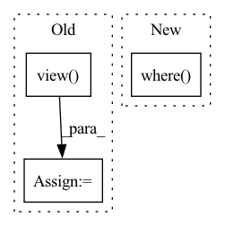

Pattern ID :16370

Before Change
)
if out is not None:
out = out.view(num_embeddings * embedding_dim)
options = torch.tensor([1, -1], dtype=dtype, device=device)
hv = torch.index_select(options, 0, selection, out=out)
hv.requires_grad = requires_grad
After Change
),
dtype=torch.bool,
).bernoulli_(1.0 - sparsity, generator=generator)
result = torch.where(select, -1, +1).to(dtype=dtype, device=device)
result.requires_grad = requires_grad
return result
In pattern: SUPERPATTERN
Frequency: 3
Non-data size: 3
Instances
Fragment ID: 55188587
Project Name: hyperdimensional-computing/torchhd
Commit Name: 846d0b5cfff5ddec678ab1f7c44ca2cc0e9296a6
Time: 2022-05-18
Author: mikeheddes@gmail.com
File Name: torchhd/functional.py
M Class Name: AnonimousClass
N Class Name: AnonimousClass
M Method Name: random_hv(0)
N Method Name: random_hv(0)
M Parent Class:
N Parent Class:
M File Name: torchhd/functional.py
N File Name: torchhd/functional.py
M Start Line: 110
M End Line: 125
N Start Line: 113
N End Line: 122
'>
Before Change
labels = labels[:, :, 0] // (C, batch_size)
mode_labels = labels[:, :, 0].mode(keepdim=True)[0] // (C, 1)
_labels = _labels.view(1, -1) // (1, batch_size)
other_idx1 = ~_labels.eq(mode_labels) // (C, batch_size)
other_idx = torch.bitwise_and(other_idx1, labels.eq(_labels)) // (C, batch_size)
condition1 = other_idx.sum(dim=-1, keepdim=True) // (C, 1)
After Change
condition1 = labels[:, :, 0].eq(_label) // exclude the ground-truth labels
values = torch.where(condition1, values[:, :, 1] - values[:, :, 2],
values[:, :, 0] - values[:, :, 1]) // (C, batch_size)
labels = torch.where(condition1, labels[:, :, 1], labels[:, :, 0]) // (C, batch_size)
mode_labels = labels.mode(keepdim=True)[0] // (C, 1) The most frequent label
mode_idx = labels.eq(mode_labels) // (C, batch_size)
'>
Fragment ID: 55188584
Project Name: ain-soph/trojanzoo
Commit Name: 1684c28ef38502abb83d37beb845b69007e33274
Time: 2020-07-07
Author: ain-soph@live.com
File Name: trojanzoo/defense/backdoor/abs.py
M Class Name: ABS
N Class Name: ABS
M Method Name: find_min_max(3)
N Method Name: find_min_max(3)
M Parent Class: Defense_Backdoor
N Parent Class: Defense_Backdoor
M File Name: trojanzoo/defense/backdoor/abs.py
N File Name: trojanzoo/defense/backdoor/abs.py
M Start Line: 210
M End Line: 225
N Start Line: 234
N End Line: 254
'>
Before Change
scores = torch.ones(batch_size, 1 + self.n_neg, device=y.device) //positive sample in the first position.
y_expand = torch.cat((y, y))
for i in range(batch_size):
scores[i, :] = torch.cat((y_expand[i].view(-1), y_expand[i + 1:i + 1 + self.n_neg]))
scores = scores / self.temperature
return scores //(batch_size, 4)
After Change
index0 = self.index0[:batch_size * (self.n_neg + 1)]
index1 = self.index1[:batch_size * (self.n_neg + 1)]
index0[np.where(index0 >= batch_size)] -= batch_size
index1[np.where(index1 >= batch_size)] -= batch_size
scores = scores[index0, index1]
else:
'>
Fragment ID: 55188589
Project Name: datawhalechina/torch-rechub
Commit Name: d0461152ddffad7a6bf7c7532b7b540094623e95
Time: 2022-06-07
Author: icewwl@163.com
File Name: torch_rechub/models/matching/youtube_sbc.py
M Class Name: YoutubeSBC
N Class Name: YoutubeSBC
M Method Name: forward(2)
N Method Name: forward(2)
M Parent Class: torch.nn.Module
N Parent Class: torch.nn.Module
M File Name: torch_rechub/models/matching/youtube_sbc.py
N File Name: torch_rechub/models/matching/youtube_sbc.py
M Start Line: 55
M End Line: 80
N Start Line: 60
N End Line: 87